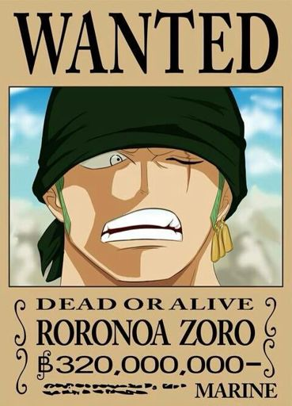

Roronoa Zoro (ロロノア・ゾロ, Roronoa Zoro?), Zoko (dans la version AB de l'anime) ou anciennement francisé en Roronoa Zorro (dans la première version française du manga), est un personnage de fiction appartenant à la franchise médiatique japonaise One Piece créée par Eiichiro Oda. C'est un épéiste de grand renom qui se bat avec trois sabres (ce style est appelé en japonais Santōryū) faisant partie de l'Équipage de Chapeau de paille dirigé par Monkey D. Luffy, le principal protagoniste de la série.
Le personnage de Roronoa Zoro est librement inspiré du pirate François l'Olonnais1, considéré comme l'un des pirates les plus cruels de son temps.
voix japonaise :Kazuya Nakai
voix francaise :Antoine Nouel
fruit du demon :aucun (Ashura(épeiste))
prime :320 milLions berry
